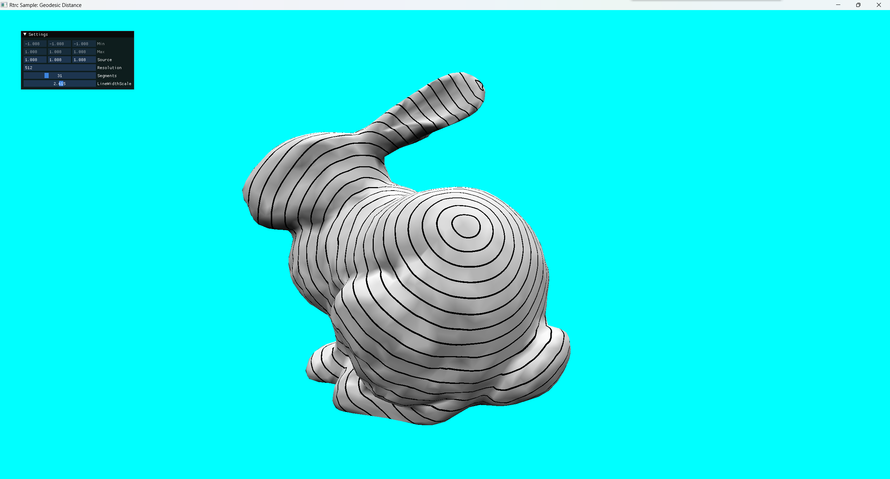

Eikonal Equation
考虑一团以一定的速度往外扩散的东西，需要计算空间中每个地方被这东西覆盖的时刻（称为抵达时间）。将扩散速度记作，显然有：
其中是起始区域。说人话就是距离 = 速度 x 时间，且起始区域的“抵达时间”为0。如果仅依赖于，那么就得到了Eikonal Equation。
FMM
基本就是Dijkstra算法，但是在“传播”这一步上做了点手脚，把距离的更新换成了基于Eikonal Equation的版本，其目标是使得：
其中是沿方向的单边方向导数，实际上就是波前法线方向。
- 将domain离散化，得到一堆点，记作；将所有与点直接相邻的点记作。
- 有一小部分点对应起始区域，其一定为0，其他点的为。
- 把所有位置划分为三类：。是已经求出的点，是正在求的，是暂时还没纳入考虑范围的。
- 初始化这三个集合：
- 初始化：
- 重复后面的步骤直到为空。
- 令，将转入。
- 对的每个点，若，则将其转入。
- 对中的每个点，若，则根据Eikonal Equation更新。
FMM on 2D Grid
来撸个二维网格上的FMM实践一下。输入是的均匀网格，每个格点与其上下左右的四个格点直接相邻，且距离为1，速度恒定为1。这些格点中有一部分是起始区域，其格点坐标记录在sources中。
首先是初始化工作：
for each p in all_grid_points:
T[p] = infinity
F = empty set
A = empty set
for each p in sources:
T[p] = 0
F.add(p)
for each p in sources:
for each n in neighbors[p]:
T[n] = 1 # 从相邻的source point传播过来，距离为1，速度为1，故耗时为1
A.add(n)然后是主循环，不断把活跃集A中抵达时间最小的元素挪进F中，并更新其邻居的抵达时间：
while A is not empty:
p = find element with smallest T from A
A.remove(p)
F.add(p)
for each n in neighbors[p]:
if T[n] == infinity: # n是个未接触过的新格点
A.add(n)
update T[n]update T[n]是最关键的步骤。在Dijkstra算法中，这里的操作是：
for each nn in neighbors[n]:
T[n] = min(T[n], T[nn] + 1)然而，我们并不是在一个长得像均匀网格的图上求最短路，这个均匀网格实际上是一个连续区域的近似。按Eikonal Equation来更新的话，需要做的是找到一个新的T[n]值，使之满足下面的方程：
其实就是把平方了一下，然后分解到两个方向上计算。
怎么解这个方程呢？我们首先计算两个中较小的那一个，存放在中。这么做的理由是很直观的——从此方向传播而来，可以更快地到达；此外，容易验证“对最终结果产生了贡献”与“是两个值中较大的那个”这两个命题间存在矛盾。
写成代码就是：
x = infinity
if n[0] > 0:
x = min(x, T[n + [-1, 0]])
if n[0] + 1 < N:
x = min(x, T[n + [1, 0]])类似地，我们把中较小的那个值记作。现在方程简化为了：
如果的值非常大，以至于，那么方程左侧的第二项必定取0（否则第一项的大小就会超过方程右侧的1），此时直接令即可。类似地，如果，就直接令：
if x + 1 <= y:
T[n] = x + 1
elif y + 1 <= x:
T[n] = y + 1
else:
# ...如果代码进了else分支，那么我们已经知道比都更大，因而可以丢掉方程中的：
容易证明该方程一定有解，且两个解中只有更大的那一个比和都更大，因此，else分支中的代码为：
else:
a = 2
b = -(2*x + 2*y)
c = x*x + y*y - 1
delta = b * b - 4 * a * c
T[n] = (-b + sqrt(delta)) / (2 * a)完事儿了！来看看运行结果：

左边是sources的分布，白色区域为起始区域；右边是normalize后的T。在本节高度简化的情境中（各处速度恒定为1，没有任何障碍物），FFM得到的正好就是距离场，看起来非常合理。
如果我们把domain从2d grid换成体素化后的mesh，就能籍此近似计算mesh的geodesic distance field了。首先把mesh体素化，在体素构成的网格上运行FFM，得到每个体素的抵达时间。然后对体素的抵达时间进行简单的线性插值，就能得到mesh上任意一点的近似抵达时间——

在速度恒定为1时，抵达时间和测地距离的值是相等的。
FFM on Triangle Mesh
TODO
文献
A Fast Marching Level Set Method for Monotinically Advancing Fronts
A Second-Order Fast Marching Eikonal Solver
On the Implementation of Fast Marching Methods for 3d Lattices